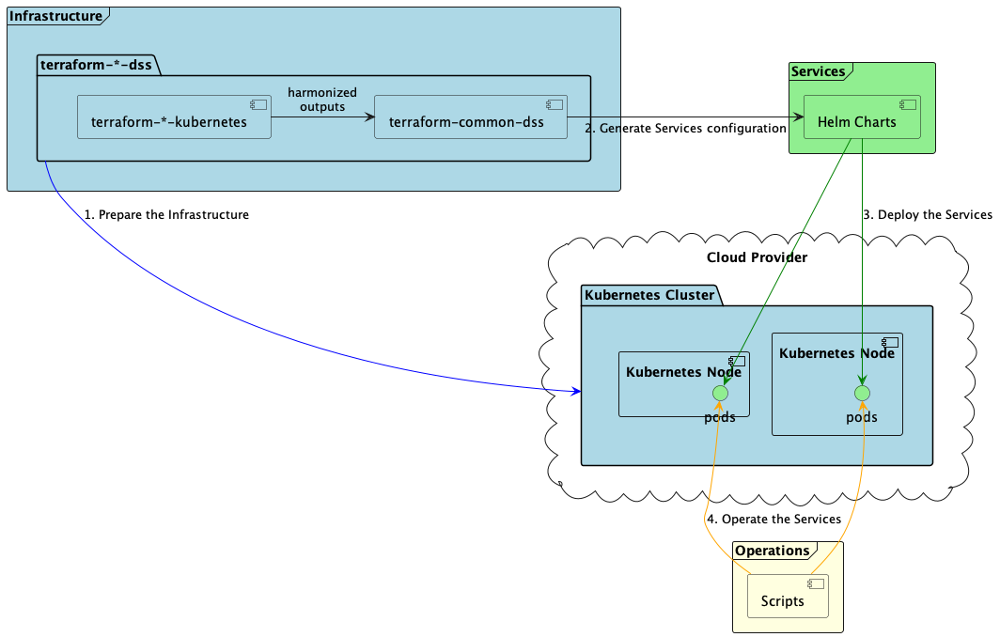

DSS Deployment User Documentation¶
Introduction¶
This website provides instructions to deploy the InterUSS USS to USS Discovery and Synchronization service.
An operational DSS deployment requires a specific architecture to be compliant with standards requirements and meet performance expectations as described in architecture. This page describes the deployment procedures recommended by InterUSS to achieve this compliance and meet these expectations.
Getting started¶
- Deploy a DSS instance to Amazon Web Services (EKS) using terraform
- Deploy a DSS instance to Google (GKE) using terraform
- Deploy a DSS instance to Google (GKE) manually step by step
- Deploy a DSS instance to Minikube
Deployment layers¶
The deployment of a DSS instance involves 3 stages:
-
Provisioning the required cloud resources, in particular a Kubernetes cluster: The Infrastructure.
-
Deploying the DSS applications under the form of kubernetes resources: The Services.
-
Recommending procedures and guidelines on how to operate the DSS: The Operations.

As described below, InterUSS provides tooling for Kubernetes deployments on Amazon Web Services (EKS) and Google Cloud (GKE). However, you can do this on any supported cloud provider or even on your own infrastructure. Review InterUSS pooling requirements and consult the Kubernetes documentation for your chosen provider.
Depending on your level of expertise and your internal organizational practices, you should be able to use each layer independently or complementary.
Migrations and upgrades¶
Information related to migrations and upgrades can be found in the migration section.
Development¶
The following diagram represents the resources in this repository per layer. 
Formatting¶
Terraform files must be formatted using terraform fmt -recursive command to pass the CI linter check.